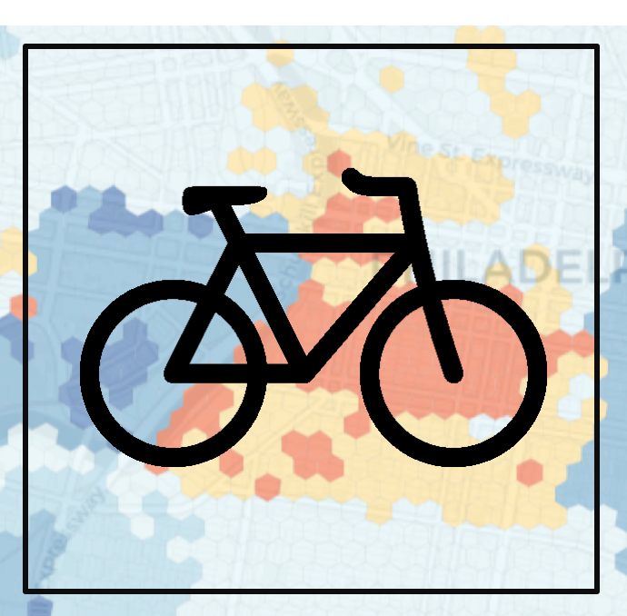

MUSA/Smart Cities Practicum
Project Description
The Master of Urban Spatial Analytics (MUSA) program at the University of Pennsylvania teaches at the intersection of data science & public policy. In the MUSA Practicum, students work with clients to develop data science tools that can help stakeholders better allocate their limited resources. The course is taught by Professor Ken Steif along with co-instructors Michael Fichman & Matthew Harris. Each project below includes a case study and source code that other cities can adopt for the purposes of replication.
Projects 2019
Wave
 View R Markdown
View R Markdown
Projects 2018
Philadelphia, PA – Developing a foreclosure early warning system
 View R Markdown
View R Markdown
Philadelphia, PA – Quantifying bike share subsidy in low-income neighborhoods

View R Markdown
Interactive map
Louisville, Kentucky - Predicting vehicle crashes with built environment data
View R Markdown
Providence, RI - Siting opioid clinics by predicting opioid overdose events
 View R Markdown
Interactive map
View R Markdown
Interactive map